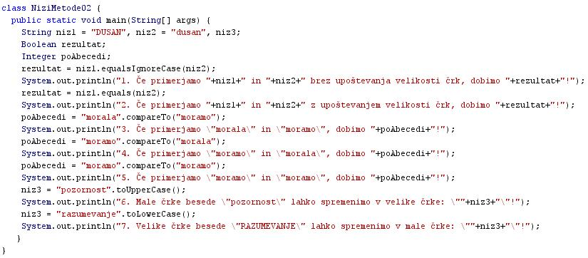
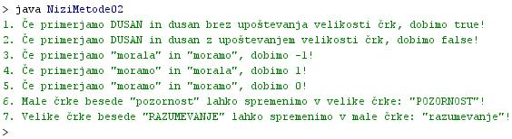

METODE NA NIZIH - DRUGI DEL
- Enostavno primerjanje nizov:
- Metoda "niz1.equals(niz2)" omogoèa ugotavljanje zgolj in samo enakosti oziroma neenakosti dveh nizov. Ta metoda razlikuje med velikimi in malimi èrkami.
- Metoda "niz1.equalsIgnoreCase(niz2)" ne razlikuje med velikimi in malimi èrkami.
- Metoda "niz1.equalsIgnoreCase(niz2)" vrne dve razlièni vrednosti:
- "true", èe sta niz 1 in niz 2 enaka
- "false", èe sta niz 1 in niz 2 razlièna
- Primer1: Stavek "DUSAN".equalsIgnoreCase("dusan") vrne vrednost "true", saj ta metoda ne razlikuje med velikimi in malimi èrkami. Med besedo "DUSAN" in "dusan" zato ne vidi razlike. Ti dve besedi sta za to metodo enaki.
- Primer1: Stavek "DUSAN".equals("dusan") vrne vrednost "false", saj ta metoda razlikuje med velikimi in malimi èrkami. Med besedo "DUSAN" in "dusan" zato opazi razliko. Ti dve besedi sta za to metodo razlièni.
- Natanèno primerjanje nizov in razvršèanje po abecedi:
- Metoda "niz1.compareTo(niz2)" omogoèa ugotavljanje enakosti oziroma neenakosti dveh nizov, poleg tega pa še omogoèa razvršèanje nizov po abecedi.
- Metoda "niz1.compareTo(niz2)" vrne tri razliène vrednosti:
- 0, èe sta niz 1 in niz 2 enaka
- 1, èe je niz 1 veèji od niza 2 - to pomeni, da je niz 1 po abecedi za nizom 2
- -1, èe je niz 1 manjši od niza 2 - to pomeni, da je niz 1 po abecedi pred nizom 2
- Primer1: Stavek "morala".compareTo("moramo") vrne vrednost 1.
- Prve štiri èrke obeh besed so enake, peta èrka besede "morala" (l) pa je po abecedi pred peto èrko besede "moramo" (m). Beseda "morala" je zato po abecedi pred besedo "moramo" in je zato tudi manjša.
-
- Pretvorba niza iz malih èrk v velike èrke:
- Primer: Metoda "pozornost".toUpperCase() vrne vrednost "POZORNOST".
- Pretvorba niza iz velikih èrk v male èrke:
- Primer: Metoda "RAZUMEVANJE".toLowerCase() vrne vrednost "razumevanje".
VAJA 10:
- V okolju za pisanje izvorne kode v jeziku Java, za prevajanje in za interaktivno delo zapiši program "NiziMetode02". Pomagaj si s sliko.
- Kodo lahko tudi kopiraš iz te datoteke in jo prilepiš v okolje, v katerem pišeš programèke. Pozor: koda, ki jo boš kopiral/a, vsebuje eno, dve, tri ali štiri napake. Èe želiš, da bo program deloval, moraš napake odkriti in jih odpraviti.
- Izvorno kodo shrani pod imenom "ImePriimek10.java". ImePriimek je seveda tvoje lastno ime in priimek.
- Datoteko "ImePriimek10.java" prevedi.
- Prevedeno datoteko zaženi, preveri rezultat v interaktivnem oknu in poklièi profesorja, da vidi rezultat.
1. Vprašanja:
1. V zvezek zapiši imena in tipe vseh spremenljivk, ki smo jih napovedali oziroma deklarirali v programu, ki predstavlja vajo v tej uèni enoti.
2. Zapiši imena in vrednosti tistih spremenljivk, ki smo jih tudi inicializirali v programu, ki predstavlja vajo v tej uèni enoti.
3. Katero metodo smo uporabili pri izpisu številka 1? Kakšen je rezultat? Zakaj je rezultat takšen?
4. Katero metodo smo uporabili pri izpisu številka 2? Kakšen je rezultat? Zakaj je rezultat takšen?
5. Katero metodo smo uporabili pri izpisu številka 3? Kakšen je rezultat? Zakaj je rezultat takšen?
6. Katero metodo smo uporabili pri izpisu številka 4? Kakšen je rezultat? Zakaj je rezultat takšen?
7. Katero metodo smo uporabili pri izpisu številka 5? Kakšen je rezultat? Zakaj je rezultat takšen?
8. Katero metodo smo uporabili pri izpisu številka 6? Kakšen je rezultat? Zakaj je rezultat takšen?
9. Katero metodo smo uporabili pri izpisu številka 7? Kakšen je rezultat? Zakaj je rezultat takšen?
10. Kakšna je naloga spremenljivk "rezultat" in "poAbecedi", ki smo jih deklarirali v našem zgledu?
2. Zapiši od ene do pet kljuènih besed, ki povzemajo vsebino te uène enote.
3. Povezave do dodatnih informacij.
Gradiva na spletnih straneh fakultete za matematiko in fiziko v Ljubljani.
Spletni priroènik proizvajalca programskega okolja Java. To je podjetje Sun.
|